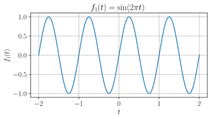
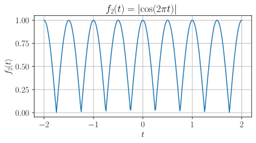
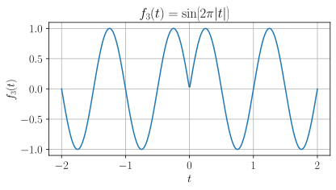
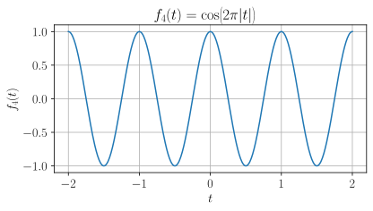
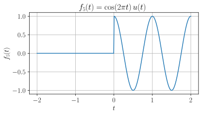

Chapter 2 - Signal Properties¶
Periodicity - Quiz¶
Question 1¶
Which of the following signals is periodic?
Select all that apply.
- A. $\quad f_{1}(t) = \sin(2\pi t)$
- B. $\quad f_{2}(t) = \lvert\cos(2\pi t)\rvert$
- C. $\quad f_{3}(t) = \sin(2\pi \lvert t \rvert)$
- D. $\quad f_{4}(t) = \cos(2\pi \lvert t \rvert)$
- E. $\quad f_{5}(t) = \cos(2\pi t)u(t)$
- F. $\quad$ None of the above.
Show answer
Signal A is periodic with fundamental period \(T=1\):
Show plot

Show derivation
Signal B is periodic with fundamental period \(T = \tfrac{1}{2}\):
Show plot

Show derivation
Signal C is non-periodic:
Show plot

Show derivation
We can rewrite this as a piecewise function
And due to the properties of the sine function, this becomes
Now, if there were no absolute value sign, the signal would have a fundamental period of \(T=1\), which means that the function would also be periodic with period \(T=k,\quad k\in\mathbb{Z}\).
Let's consider these cases, as the signal definitely won't line up for any other values of \(T\).
We can rewrite this as:
Now the following must hold for all \(t\), for the signal to be periodic.
But no matter what \(k\) value we have, we can always find a \(t\) value for which the statement fails to hold.
Case 1: \(k\geq 1\):
For this case we can simply test \(t=\tfrac{1}{4}\).
Since \(t=\tfrac{1}{4}>0\) we keep the sign:
Since \(t=\tfrac{1}{4}<k\) we flip the sign:
Case 2: \(k\leq -1\):
For the other case we can test \(t=-\tfrac{1}{4}\).
Since \(t=-\tfrac{1}{4}<0\) we flip the sign:
Since \(t=-\tfrac{1}{4}>k\) we keep the sign:
Signal D is periodic with fundamental period \(T=1\):
Show plot

Show derivation
Unlike Signal C, the absolute value actually doesn't change the signal.
Writing this piecewise, we get:
But due to the properties of cosine, this becomes:
So we simply have:
Signal E is non-periodic:
Show plot

Show derivation
We can write this as a piecewise function:
Now, if there were no unit step function, the signal would have a fundamental period of \(T=1\), which means that the function would also be periodic with period \(T=k,\quad k\in\mathbb{Z}\).
Let's consider these cases, as the signal definitely won't line up for any other values of \(T\).
We can rewrite this as:
Now the following must hold for all \(t\), for the signal to be periodic.
But no matter what \(k\) value we have, we can always find a \(t\) value for which the statement fails to hold.
Case 1: \(k\geq 1\):
For this case we can simply test \(t=\tfrac{1}{2}\).
Since \(t=\tfrac{1}{2}>0\) the function is non-zero:
Since \(t=\tfrac{1}{2}<k\) the function goes to zero:
Case 2: \(k\leq -1\):
For the other case we can test \(t=-\tfrac{1}{2}\).
Since \(t=-\tfrac{1}{2}<0\) the function goes to zero:
Since \(t=-\tfrac{1}{2}>k\) the function is non-zero:
Question 2¶
Which of the following signals is non-periodic?
Select all that apply.
- A. $\quad g_{1}(t) = \sin{(2\pi t)} + \sin{(4\pi t)}$
- B. $\quad g_{2}(t) = \sin{(t)} + \sin{(\sqrt{2}t)}$
- C. $\quad g_{3}(t) = \sin{\left(2t\right)} + \cos{(3.14t)} + \sin{\left(1.\overline{81}t\right)}$ (repeating)
- D. $\quad g_{4}(t) = \cos{(2\pi t)} + 2\cos{(12\pi t)}\sin{(25\pi t)}$
- E. $\quad g_{5}(t) = \sin{(2\pi t)} + \sin{(t)}$
- F. $\quad$ None of the above.
Question 3¶
Which of the following discrete-time signals is periodic?
Select all that apply.
- A. $\quad h_{1}[n] = (-1)^{n}$
- B. $\quad h_{2}[n] = \sin{\left(\frac{\pi n}{2}\right)}$
- C. $\quad h_{3}[n] = \cos{\left(\frac{2\pi n}{10}\right)} + \cos{\left(\frac{4\pi n}{10}\right)}$
- D. $\quad h_{4}[n] = \cos{(n)} + \cos{(2n)}$
- E. $\quad h_{5}[n] = n\ \mathrm{mod}\ 4$ (i.e., $\{0,1,2,3,0,1,\dots\}$)
- F. $\quad$ None of the above.